| 日付 | 2016年10月10日（月） |
|---|---|
| 山域 | 箱根 |
| メンバー | 家族（妻、長女・5歳、長男・3歳） |
| 山行形態 | 子連れ日帰り |
| アクセス | 車、電車 |
| ルート (Map) | 塔ノ沢駐車場 (8:20) - (11:18) 浅間山 (12:06) - (12:41) 千条の滝 (12:56) - (13:18) 小涌谷駅 |
夏休み以降天候不順が続いている。
最近、娘が週末に習い事を始めたこともあり、全然山に行けていない。
本日も曇予報だが、久々の雨以外の休日のため、山に行くことにする。
曇だとあまり遠出する気にもなれないので、久々に箱根の山に行ってみる。
箱根にある数少ない無料駐車場に車を停める。標高120m。
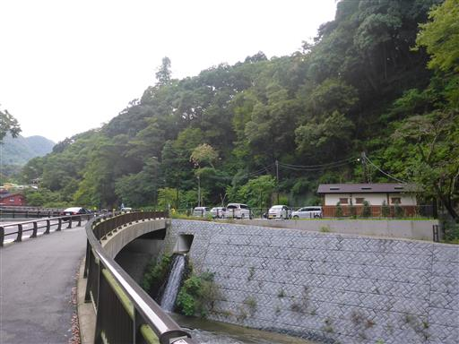
駐車場の側に函嶺洞門がある。昔の車道で現在は使われていないが、
中国の王宮をイメージして作られた美しい構造物のため、保存されている。
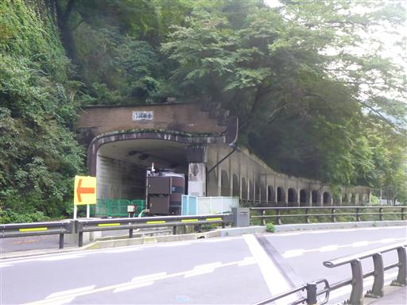
車道を少し歩いて登山口に到着する。
車の流れが多く、歩道と車道を分けるガードレールも邪魔で、なかなか道を渡れない。
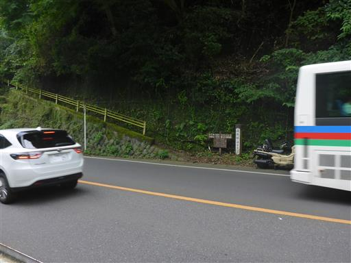
久しぶりの山道だ。8月に登山靴を買い替えて、ようやく試し履きができる。
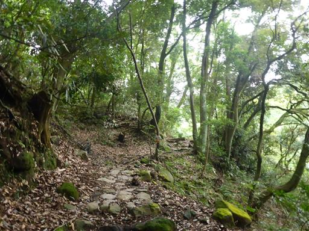
大きな実が落ちている。これは一体なんだろうか？
息子が拾って眺めている。
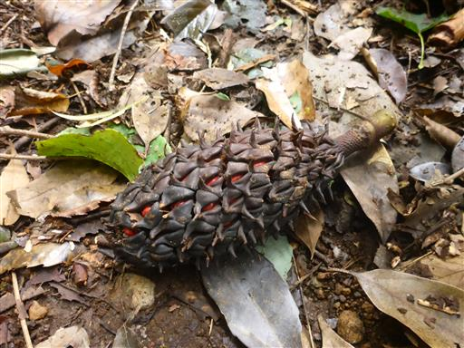
周囲は濃い緑に覆われている。この辺りはまだ夏の風景だ。
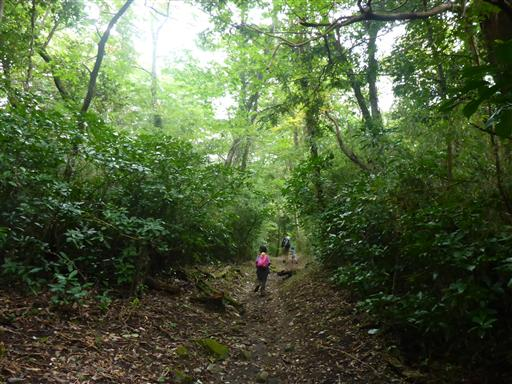
湯坂城址の標識がある場所に到着。
本当に城があったのか不思議に思うほど狭いスペースだ。
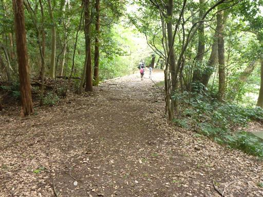
今回歩いている道は湯坂路と呼ばれている古道だ。
足元は石畳が続いている。
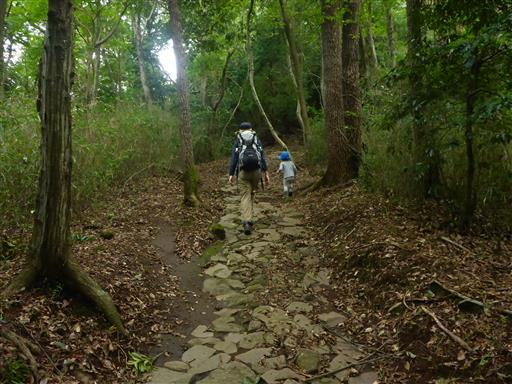
木の根があちこちに張り出していて、足が短い子供には登りにくい。
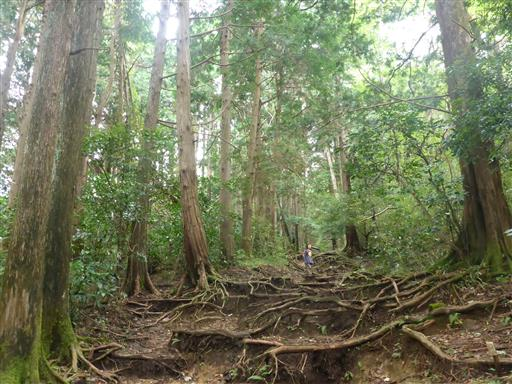
もみじの葉が付いた枝があちこちに落ちている。
ここ最近の強風や雨の影響なのだろうか？
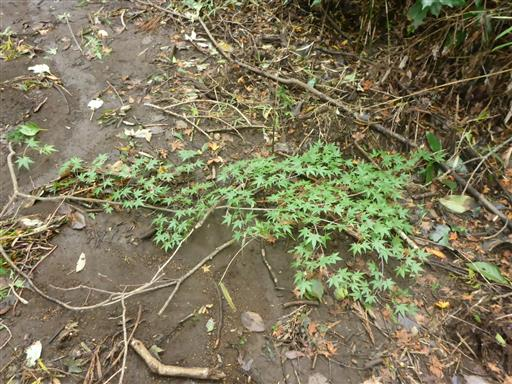
息子は大きな枝を拾って、振り回して遊んでいる。
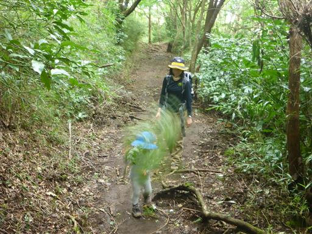
辺りにススキが増えてくる。この辺りは秋の風景だ。
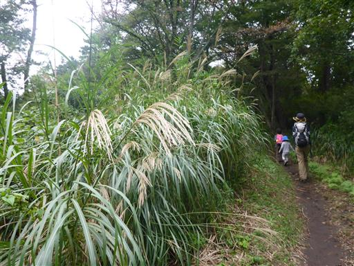
山頂近くの分岐点にようやく到着する。
緩やかな坂道だが思った以上に長い登りだった。
息子はここまで頑張って歩いたが、この後山頂まであと2分ほどのところで
歩けなくなりキャリアに乗ってしまった。
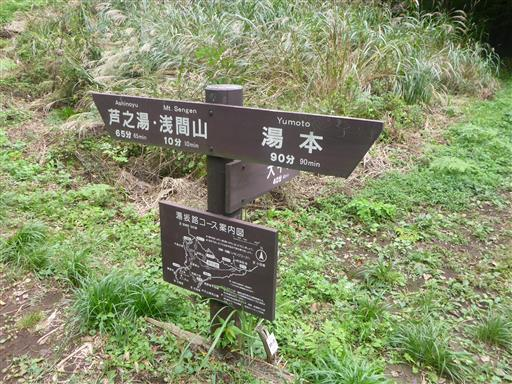
浅間山の山頂に到着する。標高804m。
木に覆われていて展望は余りない山頂だ。
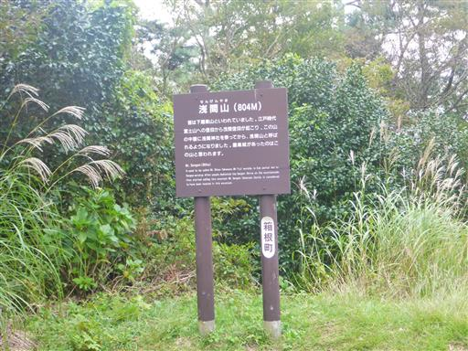
山頂部は細長い。端っこの方に腰を下ろして昼食をとる。
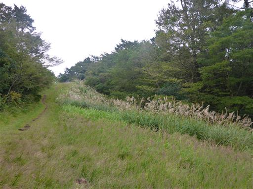
山頂は案外人が多い。地味な山なのだが、さすがは箱根だ。

近くの木に丸くて大きな実がたくさん付いている。
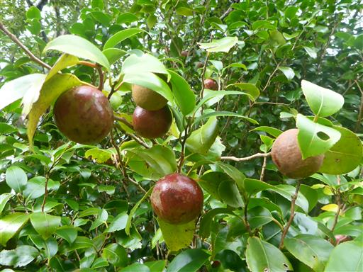
昼食を取ったら下山開始。登りとは違う道を下る。
登山道脇に大きな木が立っている。

千条の滝に到着。「ちすじのたき」と読む。
迫力はないが、なかなか美しい滝だ。
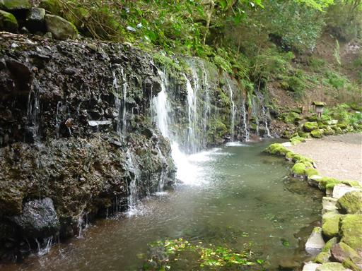
名前の通り、水の筋がたくさん見られる。岩壁は苔に覆われている。

側を流れる川もきれいだ。
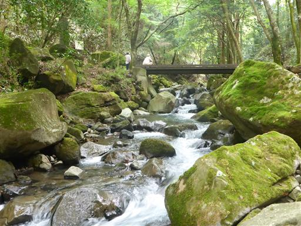
山道が終わり、車道を下って行く。息子は下山も頑張って歩いている。
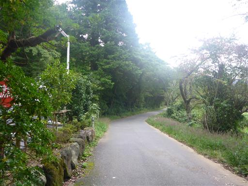
小涌谷駅に到着。標高530m。
ちょうどバスがやって来たが、この先、道が大混雑なので電車を勧められる。
ちょうど電車が行ってしまった後で、駅のホームで15分ほど待つ。
駅員の方が子供たちに電車のカードをくれたり、赤と白の遮断器の理由を教えてくれたりした。
黄色と黒だとイノシシなどの動物がやって来るため、赤と白にしているとのこと。
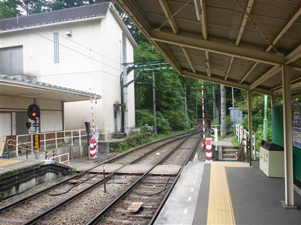
反対方向にレトロな列車がやって来る。
日曜の午後なのに、箱根中心部に向かう列車は人でいっぱいだ。
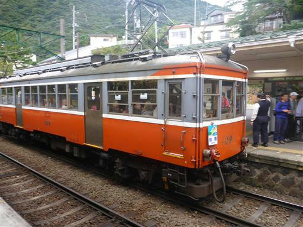
こちらにやって来たのは最新型の列車。しかし箱根の列車は遅い。
何度もスイッチバックを繰り返し、駅ですれ違い待ちをし、
本当にバスより早いのか疑問に思うほどだ。
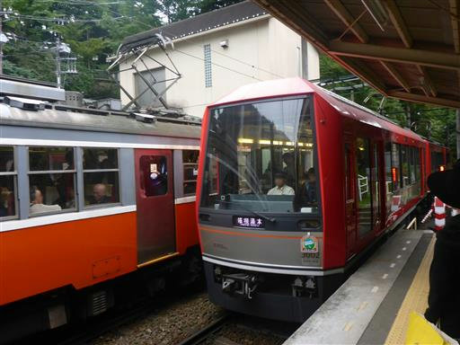
塔ノ沢駅で下車し駐車場まで歩く。
息子は山頂直下で少しキャリアに乗っただけで、あとは最後まで歩き通した。
娘もこの時期はもう歩いていたので、歩ける歳になったのだろう。
展望は無かったが久しぶりの山歩きを楽しめた。
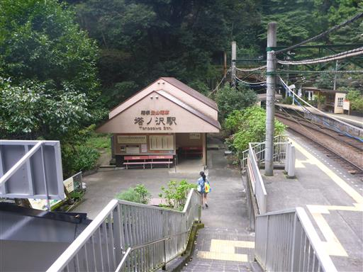